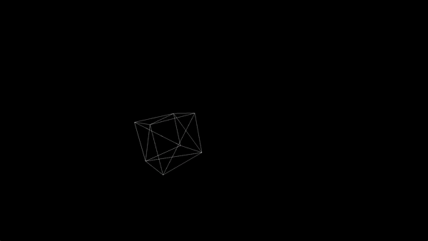

Greetings, my name is Ryan Byers. I am currently enrolled at the University of Missouri-Kansas City in Kansas City, Missouri in the pursuit of a Bachelors of Science in Computer Science. I am set to graduate next Spring (Spring 2025).
I like to spend most of my time working on personal projects to challenge myself and improve my abilities as a programmer. When I am not doing that, I like to go to the gym, go out for runs, and play videogames.
I am currently working on my first large scale project. Its primary goal is to utilize a multimedia library called SDL2 to create a 3-D renderer from scratch using C++. The project is a work in progress, with my current focus now on programming the ability to shade the objects the renderer displays on screen. I would like to bring the project to a point in which I can simulate basic physics interactions between objects on the screen.
One of the main challenges lies in the fact that SDL2 is typically paired with a graphical API like OpenGL. Thus, SDL2 does not provide functions to handle rendering in 3-D. The functions derived from SDL2 that are in use in this project at this time allow the collection of user input, creating a window, and drawing pixels onto said window. Everything else involved in the rendering pipeline must be made from scratch.
A project of this magnitude has taught me many skills, but it has also taught me many lessons. Sometimes these lessons were learned the hard way via mistakes.
One such mistake I made early on was not making my code more modular. I put too many important variables/functions in too little of a space, and this created issues as I continued development. Circular dependencies between different modules were a common problem I had run into that halted progress, as were readability, and organizational issues. I made the choice to stop progress on this project and focus my time strictly on refactoring efforts. This process was quite arduous, but as I stated before, it taught me a valuable lesson: always utilize modular programming techniques, and utilize them early on.
Additionally, this project has aquanted me much more intimately me with GitHub. I learned that using the correct terminology when making commits is incredibly important, and as such it has become a prime concern of mine as I have progressed further and further thorugh this project. I find that sometimes I come back to my project days later wanting to know what the last contribution/additon was that I has made. Early on when I was not making commits with specifc messages, this was sometimes hard, and I would be forced to dig through and re-read sections of my code that looked new to figure this out.
Below is a short demo that represents the current state of the project:
As stated before, this is still very much a work in progress, but I am hopeful that I can get this project to a point that can be deemed somewhat visually impressive given the limitations I've set for myself. Below is the link to the GitHub repository for any interested parties:
View code on Github.comClick on the below link to open my Resume in PDF form:
View ResumeWor-Wic Community College Salisbury Maryland --- Associate of Arts in General Studies: Completed May 2021.
University of Missouri-Kansas City Kansas City, Missouri --- Bachelors of Science in Computer Science: Expected Graduation: Spring 2025.
Email: ryanbyers1023@gmail.com
Phone: 816-213-4081